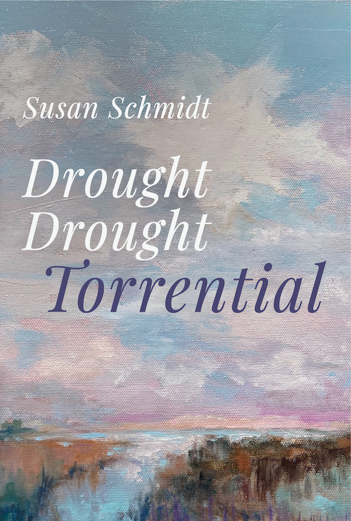

Drought Drought Torrential
During the Pandemic, Susan Schmidt weeded gardens and kayaked weekly to survey shorebirds. As scientist and poet, sailboat captain, Quaker naturalist—Susan celebrates neighbors in her small town—dolphins, clouds, egrets, terns, willets, black skimmers, oystercatchers, herons, gannets. In Beaufort, as she swims, paddles, rows, sails, walks beaches with her Boykin spaniel Pippa, Susan witnesses coastal diversity and resilience, threatened by sea level rise, King Tides, motorboat wakes, and tourist trash. Gardening on a relict sand dune, her lifework is amending soil.
About the Author
With the same mindfulness as pruning apple trees, as developmental editor, SUSAN SCHMIDT polishes science and history books, novels, and memoirs—listed among Top Ten Editors in New England. She has been a professor of literature and environmental decision-making, government science-policy analyst, and sailboat captain. She just renewed her Coast Guard Captain's license, which she's had forty years. She wrote the grant to buy Carrot Island and Bird Shoal in Beaufort for the Rachel Carson Reserve. She has a doctorate in American literature and Master's degrees in Environmental Sciences and British lit. She read literature at Oxford and, postdoc, studied botany, bioethics, and environmental mediation.
To witness natural diversity, she walked the Camino de Santiago, Cornwall Coastal Path, Scottish Highlands, Ireland's Ring of Kerry, Snowdonia in Wales, Guernsey, Brittany, and the Appalachian Trail. She surveyed birds in Kenya, Ecuador, Belize, and Iceland; paddled Alaska's Prince William Sound and New Zealand's Milford Sound; delivered sailboats to the West Indies. Her homeplace is the Chesapeake Bay in Virginia, and her homeport is Beaufort, North Carolina, where she walks beaches with her Boykin Spaniel.
Her poems appear in Literary Trails of Eastern North Carolina and won the Guy Owen, Gail O'Day, and Robert Golden poetry prizes; two poems were finalists for the James Applewhite Prize. She wrote Landfall along the Chesapeake, In the Wake of Captain John Smith, an ecological history and boat adventure; Song of Moving Water, a novel about a young woman who organizes her community to oppose a dam; Salt Runs in My Blood, poems about fish, birds, playing in boats, walking long trails; Let Go or Hold Fast, Beaufort Poems about coastal critters, sea level rise, hurricanes, and tourist trash.
Reviews
Every poem in Drought Drought Torrential is a reminder that we need to go outside and appreciate a world that is changing rapidly around us. These are poems that confront decimation and losses, by a scientifically-minded writer of deep commitment to the natural world. The story is in the detail for Susan Schmidt who finds beauty and even humor in the hard places. If you haven't been keeping score, this poet is right there at the shore, counting shorebirds and dolphins. Schmidt has written richly and beautifully of what is here now in this trepid going forward.
—Amber Flora Thomas, author of Eye of Water: Poem
A weaving of ecological celebration and grief, Drought Drought Torrential demands urgent attention to the tenuous state of our natural world. Collected wisdom—gathered from neighbors, gardeners, scientists, teachers, and old friends—rings through every verse. There is science and poetry here, the difference between which disappears.
—Kendall Jefferys, Scientist & Poet, Rhodes Scholar

Susan Schmidt, PhD (252) 269-0032
| © 2012 Susan Schmidt. All Rights Reserved. |
Find Current Book Reading Schedule
 |
 |